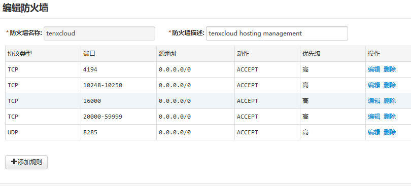

如何设置防火墙规则
由于aws, 青云和ucloud等IaaS平台上的机器默认开启防火墙，通常会屏蔽掉 22/80之外的tcp端口和所有udp端口，导致无法访问私有集群中的容器。这里以aws、青云和ucloud为例，分别介绍如何设置防火墙。
注：主机管理需要的端口：
- udp 8285(任意ip 网络通信)
- tcp 4194 (任意ip 主机和容器运行信息统计)
- tcp 10248-10255(任意ip 日志采集等)
- tcp 16000(任意ip 网络类型探测)
- tcp 20000-59999(任意ip 容器服务端口，可选：对于web等对外提供服务的应用，需要手动设置防火墙)
- tcp 22 (ssh 可选)
1. AWS. 点击查看 如何设置"入站(inbound)"防火墙规则。设置成功以后，防火墙规则如下

2. 青云. 进入主站以后，点击"安全"->"防火墙"->选择防火墙->添加"下行规则"。添加成功以后，必须点击"应用修改"才能生效。添加成功以后，防火墙显示如下

3. UCloud. 进入主站以后，可以看到"防火墙"选项，创建防火墙或者编辑已有的防火墙即可。创建成功以后，防火墙如下
